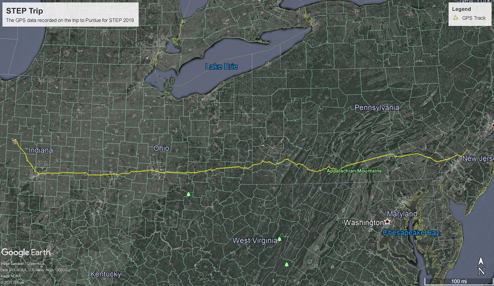

Handheld GPS
Several years ago, I got an Adafruit GPS module. As a project, I decided to make a small battery-powered handheld device to track location and give position information. A small Arduino-compatible microcontroller, a power board with a Li-ion battery, and an I2C OLED display were all assembled inside a 3d printed case. I was now ready to add some code. Since this was before I’d had any class in C, I leaned heavily on example code. Over the course of a few evenings I was able to merge the various examples into a functional program that read GPS data, computed change in position while measuring time, converted that into approximate speed, and displayed the speed along with the current position. It also logged the points as it ran so that a map could later be produced.
Shortly after finishing the device, I went on a road-trip to Purdue for a summer program. I took the GPS with me - the map can be seen below!
